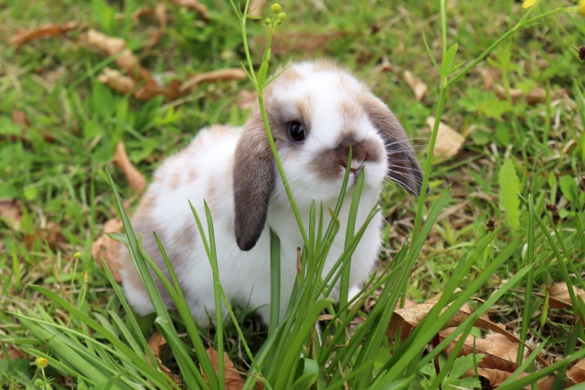
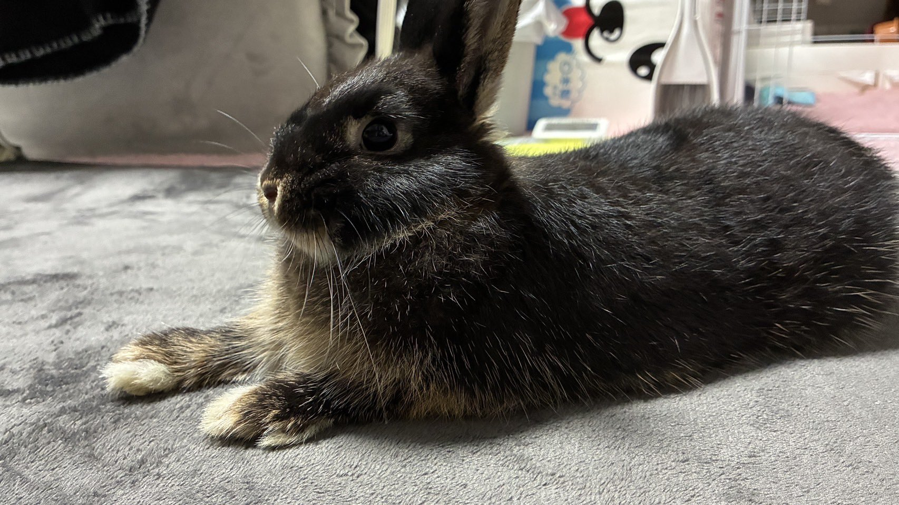
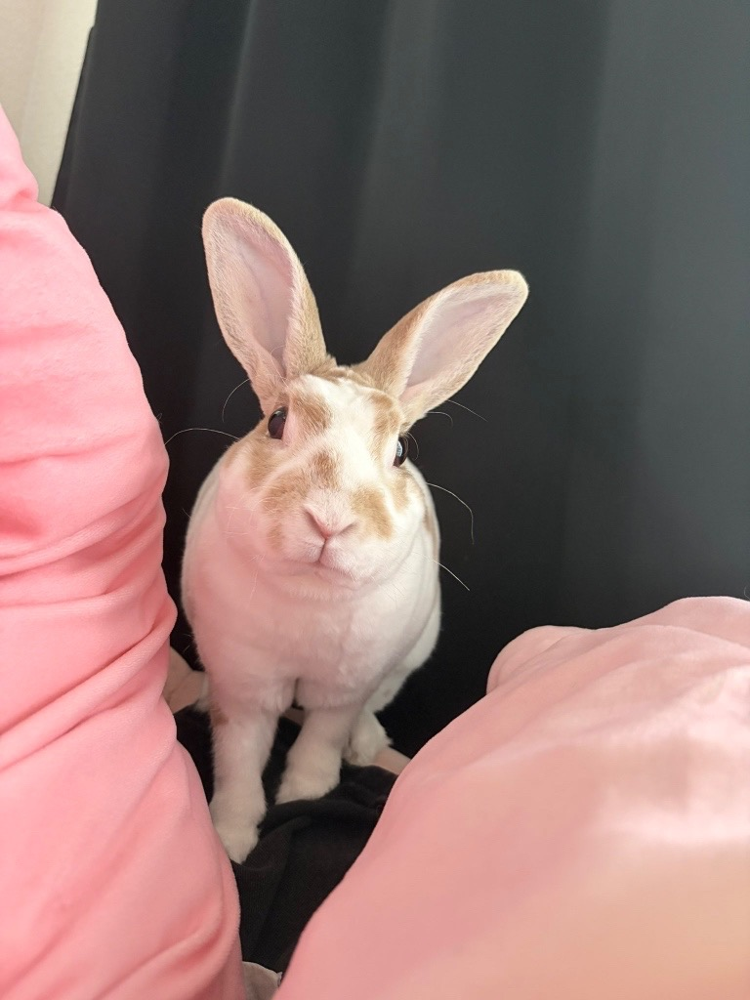
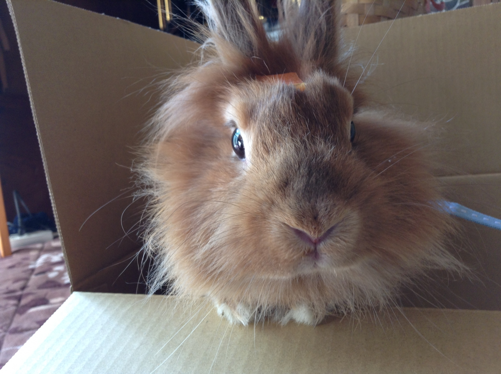

🐰 ホーランドロップ
垂れた耳が特徴の人気品種です。 穏やかで人懐っこい性格の子が多く、 丸い顔とふわふわの毛並みが魅力です。

🐰 ネザーランドドワーフ
小さな体と短い耳が特徴の人気品種です。 活発で好奇心旺盛な性格の子が多く、 ぬいぐるみのような可愛らしさがあります。

🐰 ミニレッキス
なめらかで光沢のある毛並みが特徴の品種です。 短い毛はベルベットのような触り心地で、 穏やかで人懐っこい性格の子が多いです。

🐰 ライオンヘッド
頭の周りにたてがみのような毛があるのが特徴です。 個性的でかわいらしい見た目が魅力の品種です。

🐰 アンゴラウサギ
長くてふわふわの毛が特徴の品種です。 まるでぬいぐるみのような姿をしており、 とても柔らかな毛並みが魅力です。

🐰 ミニウサギ
ミニウサギは特定の品種ではなく、 さまざまな種類のうさぎを掛け合わせた 日本で親しまれている呼び方です。
🔍 うさぎを検索
🐰 品種一覧
ホーランドロップ
ネザーランドドワーフ
ミニレッキス
ライオンヘッド
アンゴラウサギ
ミニウサギ